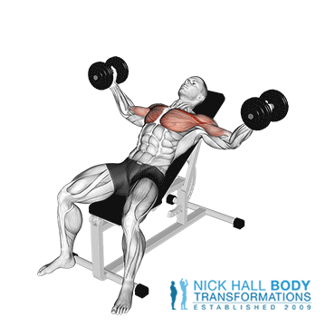

Incline dumbbell fly je klasična vaja za krepitev mišic prsnega koša.
Lezite na nagibni klopi in v vsaki roki držite dumbbell. Dumbbella držite z obrnjenim oprijemom, tako da sta naravnost nad prsmi. Dlan naj bo obrnjena druga proti drugi. Stopala postavite na tla v liniji ali za koleni. Ustvarite lok v spodnjem delu hrbta in potisnite prsni koš navzgor. Počasi spustite dumbbell ven in navzdol do ravni prsnega koša v polkrožni formaciji z upognjenimi komolci (zamah metuljevih kril). Spustite čepe do ravni prsnega koša. Čutiti bi morali raztezanje čez prsni koš.
Trajanje: minut
Kalorije: kcal
Vrsta:
Težavnost:
Kratek opis: